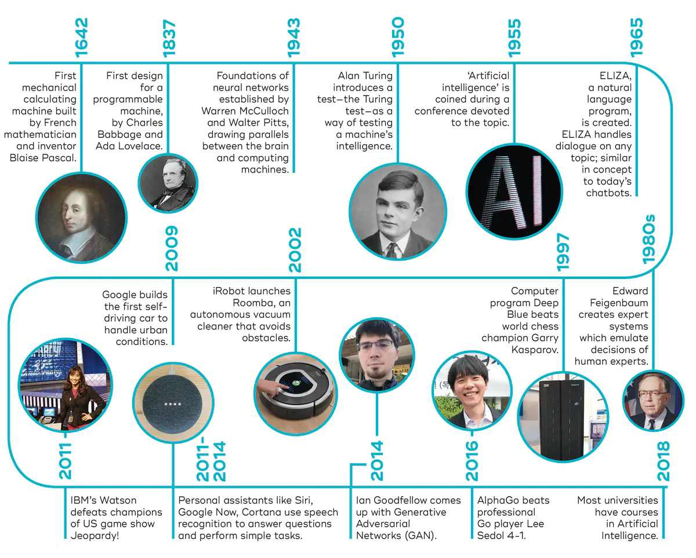
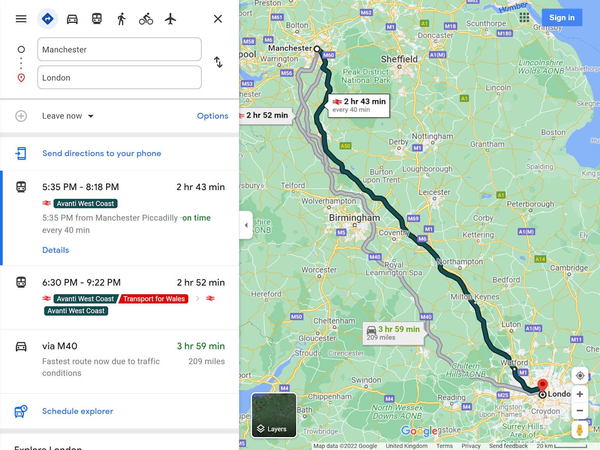

A küldetés: A "Retro-gyár" helyzetjelentése
Szigorúan bizalmas! Gyári helyzetjelentés:
- Váratlan gépleállások: Kulcsfontosságú gépeink minden előjel nélkül hibásodnak meg. A karbantartásunk reaktív, vagyis csak akkor javítunk, ha már megtörtént a baj. Ez hatalmas termelési kiesést és költséget jelent.
- Magas selejtarány: A manuális minőségellenőrzés lassú és megbízhatatlan. Rengeteg termék legördül a szalagról apró, de költséges hibákkal (karcolás, színeltérés).
- Pazarló energiafelhasználás: A gyár energiafogyasztása extrém magas. A rendszerek nem alkalmazkodnak a valós igényekhez, pazarolva ezzel az erőforrásokat.
Várom az elemzésüket!
A Főmérnök
Kiképzési modulok: Törd fel az MI kódexét!
1. kiképzés: Az MI kódexe (15 perc)
-
Turing-teszt: Képes egy gép emberként kommunikálni?

Portrait of a young Alan Turing, pioneering mathematician and computer scientist Diagram illustrating the Turing Test setup with an interrogator receiving answers from both a machine and a human
Diagram illustrating the Turing Test setup with an interrogator receiving answers from both a machine and a human
-
Történelem: Az MI ötlete az 1950-es években született, de a valódi áttörést a modern számítási kapacitás és a Big Data hozta el.

Timeline of key milestones in the history and development of artificial intelligence from 1642 to 2018
Participants of the 1956 Dartmouth Summer Research Project on Artificial Intelligence, the foundational event of AI research 
Google Maps route options from Manchester to London showing train and driving travel times and routes -
Gyenge vs. erős MI: A ma létező MI-k szinte kivétel nélkül gyenge (narrow) MI-k, vagyis egy specifikus feladatra vannak kihegyezve (pl. arcfelismerés, útvonaltervezés). Az emberi szintű erős (general) MI még a sci-fi világába tartozik.
A humanoid robot emerging from a smartphone interacts with a holographic digital face, symbolizing narrow AI and virtual assistants
Villámkvíz! (+5 IP minden helyes válaszért)
2. kiképzés: Az MI motorja (15 perc)
- Adat: Az MI "üzemanyaga". Minél több és jobb minőségű, annál okosabb a rendszer. Az iparban ez lehet szenzoradat, kamerakép vagy gyártási statisztika.
- Algoritmus: A "recept", amely feldolgozza az adatot. Ez egy matematikai modell, ami a nyers adatból döntést vagy előrejelzést hoz létre.
- Tanulás: A folyamat, ahogy az MI egyre jobbá válik.
- Felügyelt tanulás: Címkézett adatokból tanul (pl. "ez hibás", "ez jó").
- Felügyelet nélküli tanulás: Címkék nélkül, önállóan fedez fel mintázatokat.
- Megerősítéses tanulás: Jutalmazás és büntetés alapján, próbaszerencse alapon tanul.
Fejlesztési térkép: Oldd fel a jövő technológiáit!
ALAPSZINT
-
1. Képesség: AZ MI MOTORJA [LEZÁRT]
Költség: -15 IP
Hatása: Megértitek az MI működésének alapjait. Ez a belépő a következő szintre.
1. SZINT: IPARI ALKALMAZÁSOK
-
2. Képesség: IPAR 4.0 INTEGRÁCIÓ [LEZÁRT]
Költség: -20 IP
Hatása: Megismeritek a konkrét ipari megoldásokat: prediktív karbantartás, MI-alapú minőségellenőrzés, okos robotika és kiberbiztonság.
Interaktív kihívás: Váratlan események!
A modernizáció sosem zökkenőmentes. Húzzatok egy eseménykártyát, és hozzatok egy nehéz döntést!
Kattints ide egy kártya húzásához!
Végső projekt: A modernizációs terv (pitch)
Most rajtatok a sor! Használjátok a megszerzett tudást, és állítsatok össze egy 2 perces prezentációt (pitch-et) a Főmérnöknek! Válasszatok egy problémát a helyzetjelentésből, és mutassátok be a megoldásotokat!
- Probléma és megoldás: Mutassátok be a kiválasztott gyári problémát és a javasolt MI-megoldást.
- Az új technikus: Milyen új feladatai és felelősségei lesznek az ipari informatikai technikusnak az új rendszerben?
Példa pitch: "MI-alapú minőségellenőrzés"
"Tisztelt Főmérnök Úr! A "Retro-gyár" profitját a magas selejtarány rombolja. A megoldásunk egy automatizált vizuális minőségellenőrző rendszer.
Hogyan működik? A gyártósorra telepített kamerák és egy képfelismerő MI valós időben elemzik a termékeket. A rendszer egy olyan szuper-szem, ami sosem fárad el, és a legapróbb hibát is észleli.
Ebben a rendszerben a technikus szerepe felértékelődik: ő lesz az MI-modell trénere és felügyelője, aki új hibatípusokra tanítja a rendszert. Ez a beruházás közvetlenül növeli a profitot és a minőséget. Köszönjük a figyelmet!"
Gratulálunk, Felfedező!
Sikeresen teljesítetted a küldetést. Most már te is az "Okos gyár" építői közé tartozol!